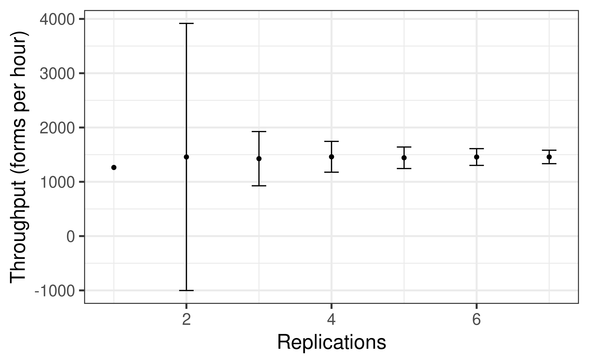
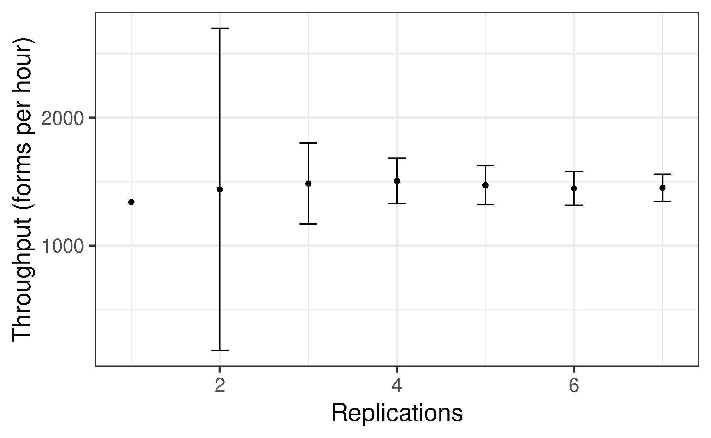
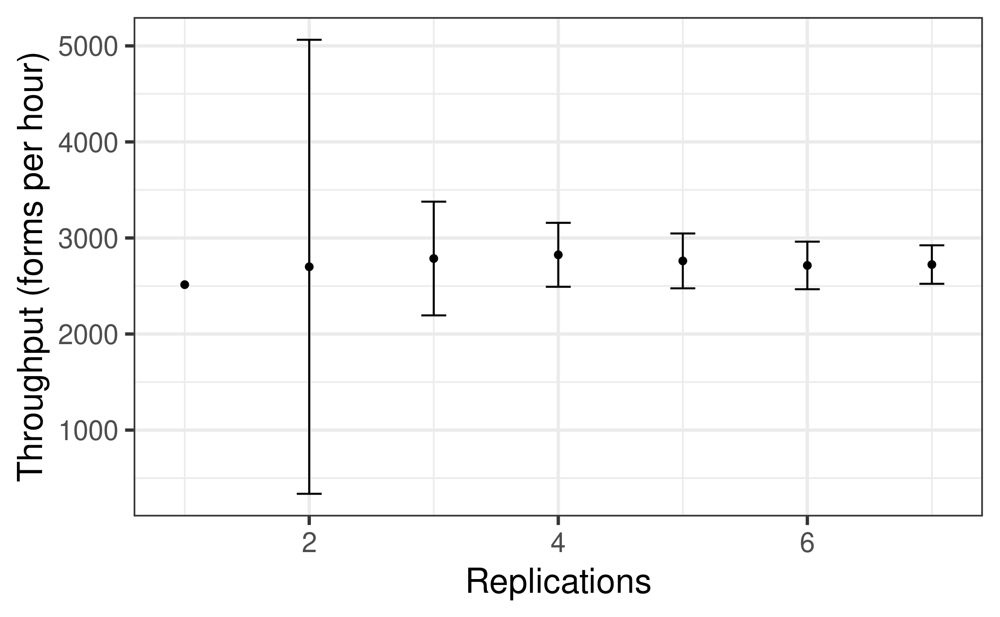

# Use Python 2.7.12
FROM python:2.7.12-wheezy
# Copy files
COPY ./reproduction ./
# Install dependencies
RUN pip install --no-cache-dir --upgrade pip \
&& pip install --no-cache-dir -r ./docker/requirements.txt
Had SSL issues. Appears this might be related to 2.7.12-wheezy being unsupported.
Building from scratch
Tom suggested building from scratch, with an example from like:
# Use the official Ubuntu base image
FROM ubuntu:16.04
# Set environment variables to prevent Python from buffering stdout and stderr
ENV PYTHONUNBUFFERED=1
# Update the package list and install dependencies for Python
RUN apt-get update && \
apt-get install -y \
wget \
build-essential \
libssl-dev \
libffi-dev \
libbz2-dev \
libreadline-dev \
libsqlite3-dev \
zlib1g-dev \
libncurses5-dev \
libgdbm-dev \
libnss3-dev \
tk-dev \
liblzma-dev \
libsqlite3-dev \
lzma \
ca-certificates \
curl \
git
# Download and install Python 2.7.12 from source
RUN wget https://www.python.org/ftp/python/2.7.12/Python-2.7.12.tgz && \
tar xzf Python-2.7.12.tgz && \
cd Python-2.7.12 && \
./configure --enable-optimizations && \
make altinstall && \
cd .. && \
rm -rf Python-2.7.12 Python-2.7.12.tgz
# Install pip version 19.3.1
RUN wget https://bootstrap.pypa.io/pip/2.7/get-pip.py && \
python2.7 get-pip.py pip==19.3.1 && \
rm get-pip.py
# Install the required Python packages
RUN pip2.7 install \
inspyred==1.0 \
matplotlib==1.3.1 \
networkx==1.8.1 \
numpy==1.8.0 \
pytest==4.6.2 \
scipy==0.13.2 \
simpy==2.3.1
# Copy the local directory content into the container
COPY ./reproduction ./
# Open the container with a bash shell
CMD ["/bin/bash"]
This worked, as I could run this from python_scripts/:
python2.7 Experiment5.py
And this from tests/:
pytest
And can check it has correct packages and versions:
pip list
python2.7 --version
Then:
exit
This image was 1.12GB, although that was actually smalelr than most my other images have been (2-3GB), so I kept as is without slim.
10.35-10.50: Some final attempts at the reproduction
Tom asked about the reproduction troubleshooting, I decided to try just some more final attempts, just focusing on Experiment5, which had no parameters changed from the original.
I tried 100 arrivals:
I tried 115 arrivals:

I tried 100 arrivals with 24 hours:

I tried 100K max entities:

But no luck.
Timings
import syssys.path.append('../')from timings import calculate_times# Minutes used prior to todayused_to_date =1061# Times from todaytimes = [ ('10.35', '10.50')]calculate_times(used_to_date, times)
Time spent today: 15m, or 0h 15m
Total used to date: 1076m, or 17h 56m
Time remaining: 1324m, or 22h 4m
Used 44.8% of 40 hours max
Untimed: Wrapping up research compendium
Activated GitHub action to push container to GHCR.
Updated the README accordingly with information about docker.